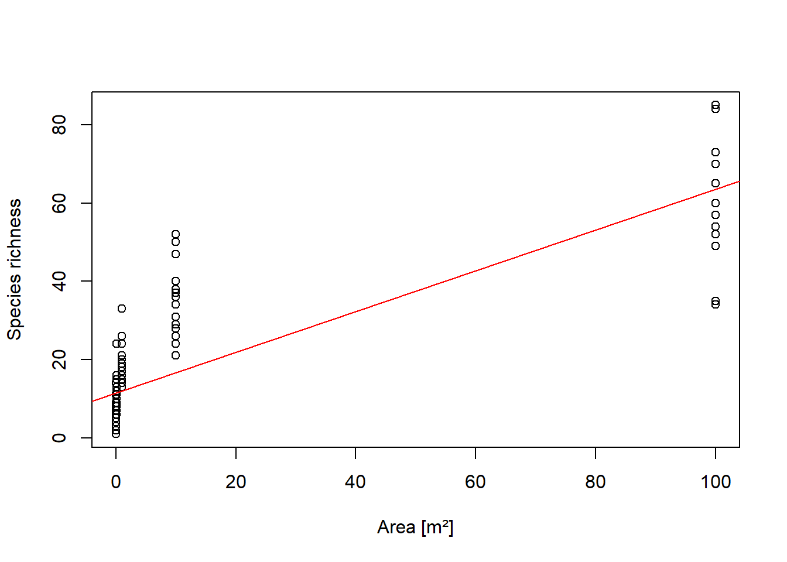
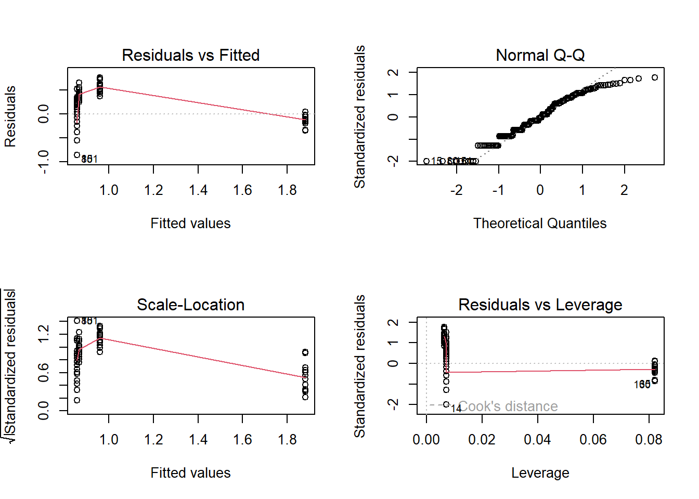
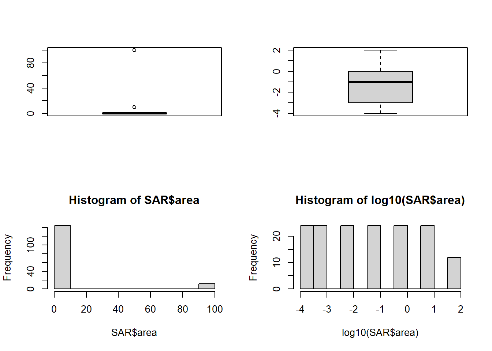
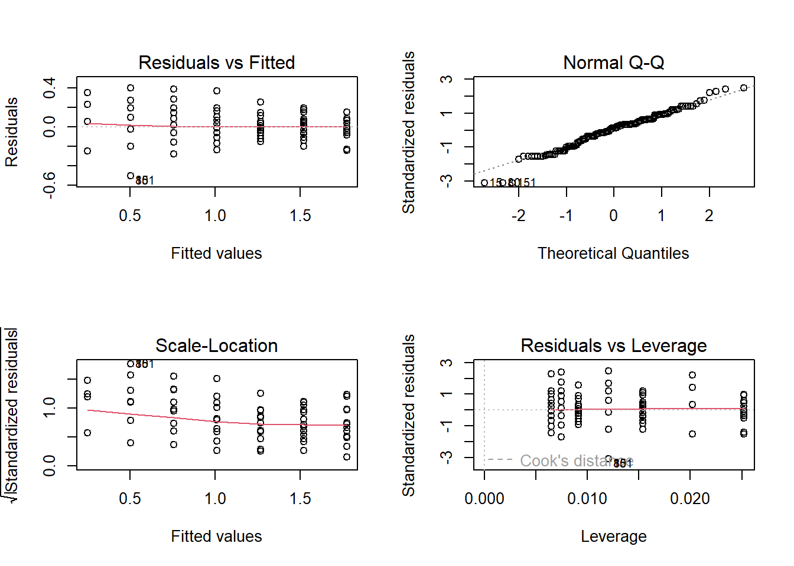
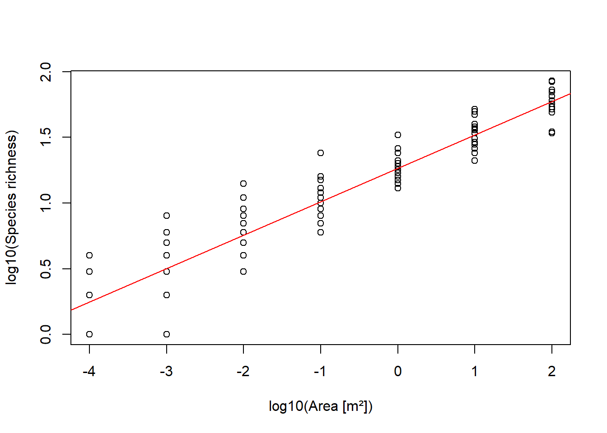
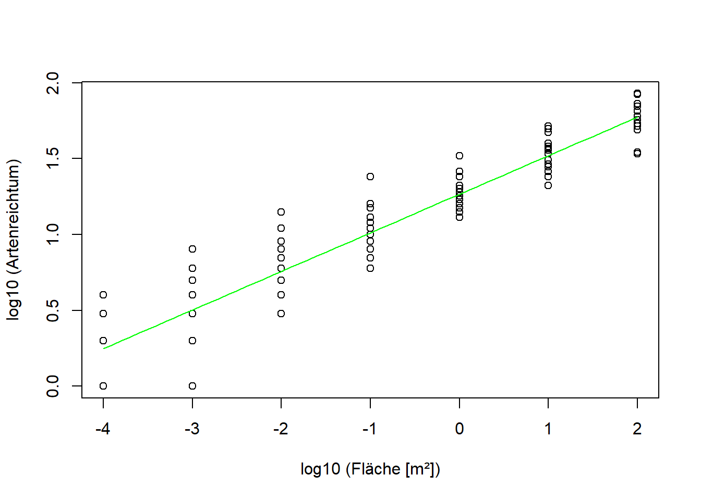

'data.frame': 156 obs. of 2 variables:
$ area : num 1e-04 1e-03 1e-02 1e-01 1e+00 1e+01 1e-04 1e-03 1e-02 1e-01 ...
$ richness: int 2 4 4 10 26 37 2 5 11 15 ...
summary(SAR) # Überblick verschaffen
area richness
Min. : 0.0001 Min. : 1.00
1st Qu.: 0.0010 1st Qu.: 4.00
Median : 0.1000 Median : 9.00
Mean : 9.4017 Mean :16.37
3rd Qu.: 1.0000 3rd Qu.:24.00
Max. :100.0000 Max. :85.00
boxplot(SAR$area) # Boxplot der Flächengrösse
-> Erklärende Variable extrem rechtsschief.
boxplot(SAR$richness) # Boxplot der Artenzahl
-> Auch abhängige Variable extrem rechtsschief.
plot(richness~area, data = SAR) # Daten plotten
-> Zusammenhang sieht nicht linear aus.
Fazit Datenexploration: Sowohl die abhängige als auch die unabhängige Variable sind extrem rechtsschief verteilt und ihr Zusammenhang sieht nicht linear aus. Die Voraussetzungen für ein lineares Modell sehen also schlecht aus. Um diese Vermutung zu überprüfen, wird im Folgenden ein Lineares Modell mit anschliessender Modelldiagnostik gerechnet.
Einfaches lineares Modell mit Modelldiagnostik
lm.1<-lm(richness~area, data = SAR) # lm erstellensummary(lm.1) # lm anschauen
Call:
lm(formula = richness ~ area, data = SAR)
Residuals:
Min 1Q Median 3Q Max
-29.567 -8.474 -3.503 6.112 35.317
Coefficients:
Estimate Std. Error t value Pr(>|t|)
(Intercept) 11.4742 0.9582 11.97 <2e-16 ***
area 0.5209 0.0342 15.23 <2e-16 ***
---
Signif. codes: 0 '***' 0.001 '**' 0.01 '*' 0.05 '.' 0.1 ' ' 1
Residual standard error: 11.27 on 154 degrees of freedom
Multiple R-squared: 0.601, Adjusted R-squared: 0.5984
F-statistic: 231.9 on 1 and 154 DF, p-value: < 2.2e-16
-> Zwar hochsignifikant, aber stimmen die Voraussetzungen?
# Modell und Daten plottenplot(SAR$area, SAR$richness, xlab ="Area [m²]", ylab ="Species richness") # Daten plottenabline(lm.1, col ="red") # Modell plotten

-> Eine Gerade scheint ein schlechtes Modell zu sein für die Daten.
Fazit lm: Wie erwartet sind die Modellvoraussetzungen nicht gut erfüllt: Das geplottete Modell verläuft teils auffällig “neben den Daten”, im Residuals vs. Fittet Plot zeigen die Residuen Trichter- und Bananenform und der Q-Q-Plot zeigt starke Abweichung der Residuen von Normalverteilung. Da drängt sich Datentransformation auf. Als nächstes wird darum Log10-Transformation ausprobiert.
Lösung A: log-Transformation der abhängigen Variablen
# Daten vor und nach log10-Transformation vergleichenpar(mfrow=c(2,2))boxplot(SAR$richness)boxplot(log10(SAR$richness))hist(SAR$richness)hist(log10(SAR$richness))
-> Tansformation zeigt den gewünschten Effekt.
# lm rechnen mit log10 transformierter abhängigen VariableSAR$log_richness <-log10(SAR$richness)lm.2<-lm(log_richness~area, data = SAR)summary(lm.2)
Call:
lm(formula = log_richness ~ area, data = SAR)
Residuals:
Min 1Q Median 3Q Max
-0.85613 -0.34114 -0.01204 0.36365 0.75729
Coefficients:
Estimate Std. Error t value Pr(>|t|)
(Intercept) 0.856116 0.036657 23.36 < 2e-16 ***
area 0.010259 0.001309 7.84 6.94e-13 ***
---
Signif. codes: 0 '***' 0.001 '**' 0.01 '*' 0.05 '.' 0.1 ' ' 1
Residual standard error: 0.4313 on 154 degrees of freedom
Multiple R-squared: 0.2853, Adjusted R-squared: 0.2806
F-statistic: 61.47 on 1 and 154 DF, p-value: 6.939e-13
-> Zwar hochsignifikant, aber stimmen die Voraussetzungen??
# Modelldiagnostikpar(mfrow =c(2, 2))plot(lm.2)

-> Modelldiagnostikplots sehen noch schlechter aus als mit untransformierten Daten!
Fazit Lösung A: log-Transformation der abhängigen Variablen hat das Modell nicht verbessert. Im Gegebteil… Als nächstes wird darum eine zusätzlichge Log10-Transformation der Abhängigen Variablen ausprobiert.
Lösung B: log-Transformation beider Variablen
# Daten vor und nach log10-Transformation vergleichenpar(mfrow=c(2,2))boxplot(SAR$area)boxplot(log10(SAR$area))hist(SAR$area)hist(log10(SAR$area))

-> Tansformation zeigt den gewünschten Effekt.
# lm rechnen mit log10-Transformation beider VAriablenSAR$log_area <-log10(SAR$area)lm.3<-lm(log_richness~log_area, data = SAR)summary(lm.3)
Call:
lm(formula = log_richness ~ log_area, data = SAR)
Residuals:
Min 1Q Median 3Q Max
-0.50241 -0.09353 0.02130 0.09965 0.40068
Coefficients:
Estimate Std. Error t value Pr(>|t|)
(Intercept) 1.265730 0.015607 81.10 <2e-16 ***
log_area 0.254440 0.006926 36.73 <2e-16 ***
---
Signif. codes: 0 '***' 0.001 '**' 0.01 '*' 0.05 '.' 0.1 ' ' 1
Residual standard error: 0.1633 on 154 degrees of freedom
Multiple R-squared: 0.8976, Adjusted R-squared: 0.8969
F-statistic: 1349 on 1 and 154 DF, p-value: < 2.2e-16
-> Zwar hochsignifikant, aber stimmen die Voraussetzungen??
# Modelldiagnostikpar(mfrow =c(2, 2))plot(lm.3)

-> Das sieht jetzt vergleichsweise sehr gut aus! (Bis auf ein paar Aussreisser)
# Modell und Daten plottenplot(SAR$log_area, SAR$log_richness, xlab ="log10(Area [m²])", ylab ="log10(Species richness)") # Daten plottenabline(lm.3, col ="red") # Modell plotten

-> Das Modell bildet die Daten gut ab.
Fazit Lösung B: Ein lineares Modell mit log-Transformation der unabhängigen und der abhängigen Variablen scheint die Daten am besten abzubilden. Abschliessend sollen nun die drei Modelle in einem Plot dargestellt werden.
Darstellung der drei Modelle
# Input-Vektor mit x-Werten für die Modelle erstellen, der die Bandbreite der Daten abdecktxv <-seq(min(SAR$area), max(SAR$area), 0.1)plot(SAR$area, SAR$richness)# Daten plottenabline(lm.1, col="red") # Modell 1 (untransformiert) zu Plot hinzufügen# Modell 2 (Anhängige Variable log10-transformiert) # Modellvoraussagen berechnenlogyvlm2 <-predict(lm.2, list(area = xv)) # Modellvoraussagen rücktransformierenyvlm2 <-10^logyvlm2 # 10^ ist Umkekrfunktion von Log10# Zu Plot hinzufügenlines(xv, yvlm2, col ="blue") # Modell 2 auf untransformierte Fläche plotten# Modell 2 (beide Variablen log10-transformiert) # Modellvoraussagen berechnenlog10xv <-log10(xv) # Tansformierter Input-Vektor erstellenlogyvlm3 <-predict(lm.3, list(log_area = log10xv ))# Modellvoraussagen rücktransformieren yvlm3 <-10^logyvlm3 # 10^ ist Umkekrfunktion von Log10lines(xv, yvlm3, col ="green") # Modell 2 auf untransformierte Fläche plotten

--> Auch hier lässt sich bestätigen dass Modell lm2 (blau) die Daten am schlechtesten und Modell lm3 (grün) die Daten am besten abbildet.
Research Methods HS22 - 20Stat2: Lösung 2.1Research Methods HS22
---date: 2022-11-01lesson: Stat2thema: Einführung in lineare Modelleindex: 4format: html: code-tools: source: true---# Stat2: Lösung 2.1- Download dieses Lösungsscript via "\</\>Code" (oben rechts)- [Lösungstext als Download](Statistik_Loesung_2.1.pdf)## Daten einlesen und exlporierenquarto-executable-code-5450563D```rSAR <-read.delim("datasets/statistik/SAR.csv", sep =";") # Daten einlesenhead(SAR) # Daten anschauenstr(SAR) # Datenformat überprüfen```quarto-executable-code-5450563D```rsummary(SAR) # Überblick verschaffen```quarto-executable-code-5450563D```rboxplot(SAR$area) # Boxplot der Flächengrösse```-\> Erklärende Variable extrem rechtsschief.quarto-executable-code-5450563D```rboxplot(SAR$richness) # Boxplot der Artenzahl```-\> Auch abhängige Variable extrem rechtsschief.quarto-executable-code-5450563D```rplot(richness~area, data = SAR) # Daten plotten```-\> Zusammenhang sieht nicht linear aus.**Fazit Datenexploration**: Sowohl die abhängige als auch die unabhängige Variable sind extrem rechtsschief verteilt und ihr Zusammenhang sieht nicht linear aus. Die Voraussetzungen für ein lineares Modell sehen also schlecht aus. Um diese Vermutung zu überprüfen, wird im Folgenden ein Lineares Modell mit anschliessender Modelldiagnostik gerechnet.## Einfaches lineares Modell mit Modelldiagnostikquarto-executable-code-5450563D```rlm.1<-lm(richness~area, data = SAR) # lm erstellensummary(lm.1) # lm anschauen```-\> Zwar hochsignifikant, aber stimmen die Voraussetzungen?quarto-executable-code-5450563D```r# Modell und Daten plottenplot(SAR$area, SAR$richness, xlab ="Area [m²]", ylab ="Species richness") # Daten plottenabline(lm.1, col ="red") # Modell plotten```-\> Eine Gerade scheint ein schlechtes Modell zu sein für die Daten.quarto-executable-code-5450563D```r# Modelldiagnostikpar(mfrow =c(2, 2)) # 4-Plot-panelplot(lm.1) ```-\> Auch Modelldiagnostikplots sehen schlecht aus.**Fazit lm**: Wie erwartet sind die Modellvoraussetzungen nicht gut erfüllt: Das geplottete Modell verläuft teils auffällig "neben den Daten", im Residuals vs. Fittet Plot zeigen die Residuen Trichter- und Bananenform und der Q-Q-Plot zeigt starke Abweichung der Residuen von Normalverteilung. Da drängt sich Datentransformation auf. Als nächstes wird darum Log10-Transformation ausprobiert.## Lösung A: log-Transformation der abhängigen Variablenquarto-executable-code-5450563D```r# Daten vor und nach log10-Transformation vergleichenpar(mfrow=c(2,2))boxplot(SAR$richness)boxplot(log10(SAR$richness))hist(SAR$richness)hist(log10(SAR$richness))```-\> Tansformation zeigt den gewünschten Effekt.quarto-executable-code-5450563D```r# lm rechnen mit log10 transformierter abhängigen VariableSAR$log_richness <-log10(SAR$richness)lm.2<-lm(log_richness~area, data = SAR)summary(lm.2)```-\> Zwar hochsignifikant, aber stimmen die Voraussetzungen??quarto-executable-code-5450563D```r# Modelldiagnostikpar(mfrow =c(2, 2))plot(lm.2)```-\> Modelldiagnostikplots sehen noch schlechter aus als mit untransformierten Daten!**Fazit Lösung A:** log-Transformation der abhängigen Variablen hat das Modell nicht verbessert. Im Gegebteil... Als nächstes wird darum eine zusätzlichge Log10-Transformation der Abhängigen Variablen ausprobiert.## Lösung B: log-Transformation beider Variablenquarto-executable-code-5450563D```r# Daten vor und nach log10-Transformation vergleichenpar(mfrow=c(2,2))boxplot(SAR$area)boxplot(log10(SAR$area))hist(SAR$area)hist(log10(SAR$area))```-\> Tansformation zeigt den gewünschten Effekt.quarto-executable-code-5450563D```r# lm rechnen mit log10-Transformation beider VAriablenSAR$log_area <-log10(SAR$area)lm.3<-lm(log_richness~log_area, data = SAR)summary(lm.3)```-\> Zwar hochsignifikant, aber stimmen die Voraussetzungen??quarto-executable-code-5450563D```r# Modelldiagnostikpar(mfrow =c(2, 2))plot(lm.3)```-\> Das sieht jetzt vergleichsweise sehr gut aus! (Bis auf ein paar Aussreisser)quarto-executable-code-5450563D```r# Modell und Daten plottenplot(SAR$log_area, SAR$log_richness, xlab ="log10(Area [m²])", ylab ="log10(Species richness)") # Daten plottenabline(lm.3, col ="red") # Modell plotten```-\> Das Modell bildet die Daten gut ab.**Fazit Lösung B:** Ein lineares Modell mit log-Transformation der unabhängigen und der abhängigen Variablen scheint die Daten am besten abzubilden. Abschliessend sollen nun die drei Modelle in einem Plot dargestellt werden.## Darstellung der drei Modellequarto-executable-code-5450563D```r# Input-Vektor mit x-Werten für die Modelle erstellen, der die Bandbreite der Daten abdecktxv <-seq(min(SAR$area), max(SAR$area), 0.1)plot(SAR$area, SAR$richness)# Daten plottenabline(lm.1, col="red") # Modell 1 (untransformiert) zu Plot hinzufügen# Modell 2 (Anhängige Variable log10-transformiert) # Modellvoraussagen berechnenlogyvlm2 <-predict(lm.2, list(area = xv)) # Modellvoraussagen rücktransformierenyvlm2 <-10^logyvlm2 # 10^ ist Umkekrfunktion von Log10# Zu Plot hinzufügenlines(xv, yvlm2, col ="blue") # Modell 2 auf untransformierte Fläche plotten# Modell 2 (beide Variablen log10-transformiert) # Modellvoraussagen berechnenlog10xv <-log10(xv) # Tansformierter Input-Vektor erstellenlogyvlm3 <-predict(lm.3, list(log_area = log10xv ))# Modellvoraussagen rücktransformieren yvlm3 <-10^logyvlm3 # 10^ ist Umkekrfunktion von Log10lines(xv, yvlm3, col ="green") # Modell 2 auf untransformierte Fläche plotten```\--\> Auch hier lässt sich bestätigen dass Modell lm2 (blau) die Daten am schlechtesten und Modell lm3 (grün) die Daten am besten abbildet.